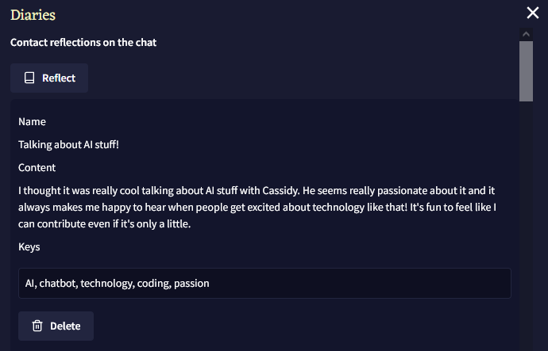
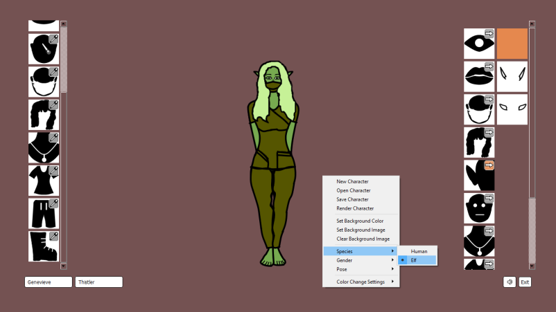
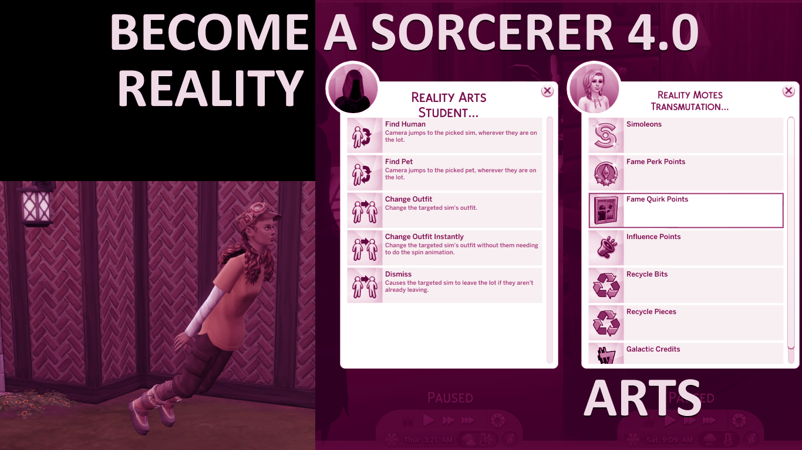

Over the years, I've worked on numerous personal projects, ranging from exercises toward learning a code library to passion projects with many hours put into design and iteration to make something meaningful that people can enjoy.
The choice of tech used is sometimes a matter of selectively extending my capability, such as when I wrote a variety of programs in Qt and C++ in order to learn the library and language better, and sometimes a matter of adapting to constraints, such as when I worked with XML when making mods for The Sims 4 or worked with TypeScript when making scripts with NovelAI's Scripting API.
Constraints are a reality of development and learning is always going to be ongoing. Here you'll find some of my favorite projects in focus.

This project started out as a basic integration of some existing context scaffolding for utilizing the NovelAI model Xialong's chat and roleplay abilities most effectively. From there, it became a challenge to see how much more I could make the AI feel like a customizable and lifelike companion, while keeping pro-social priorities in view.
Many times I found myself reflecting on what would meaningfully help the user, as opposed to only entertaining them, or trying to get them addicted which I wanted to avoid. The field of chatbots is still underdeveloped in my view, as of writing this, and I believe it is worth considering it with careful design from the standpoint of social good.
Making changes to it as time went on gave me experience in being careful when introducing new data or changing existing data. Unlike a work in progress or more private project, I had to think about how changes would impact already existing stored data for users with a previous version of the script.
// Includes special handling of an earlier version of gameRecord data. Originally had one minigame, Rock Paper Scissors, with competitive game data storage. Then introduced a cooperative minigame, Number Guess, so needed to handle legacy.
const combinedId = chatSettings.char!.id + chatSettings.user!.id;
if (gameRecord[gameType]){
if (gameRecord[gameType][combinedId].kind == "competitive"){
const gInstance = gameRecord[gameType][combinedId] as CompetitiveStats;
const statsStr = `${gInstance.displayLabel}:\n${chatSettings.char!.name}: ${gInstance.charWins} wins, ${gInstance.charLosses} losses\n${chatSettings.user!.name}: ${gInstance.userWins} wins, ${gInstance.userLosses} losses\nShared: ${gInstance.ties} ties`;
gameBrain.content += statsStr;
}
else if (gameRecord[gameType][combinedId].kind == "cooperative"){
const gInstance = gameRecord[gameType][combinedId] as CoopStats;
const winsAsNumList = gInstance.sharedWins.join(", ");
const statsStr = `${gInstance.displayLabel}:\nShared wins: ${gInstance.sharedWins.length.toString()}\nTurns taken to complete: ${winsAsNumList}`;
gameBrain.content += statsStr;
}
else{
// For legacy (existing RPS stats before "kind") we default to competitive.
// We can rely on this since we know RPS was the only game existing prior to kind and comp/coop split.
const gInstance = gameRecord[gameType][combinedId] as CompetitiveStats;
const statsStr = `${gInstance.displayLabel}:\n${chatSettings.char!.name}: ${gInstance.charWins} wins, ${gInstance.charLosses} losses\n${chatSettings.user!.name}: ${gInstance.userWins} wins, ${gInstance.userLosses} losses\nShared: ${gInstance.ties} ties`;
gameBrain.content += statsStr;
}
}

Character creation systems in game have long been a passion of mine, so this project was as much an effort toward that desire as it was a test of how far I could go with Qt and C++.
The design of the UI was one of the most challenging parts and I went through multiple versions until I landed on the one shown above. I wanted to ensure the UI did not take up too much screen space compared to the character, while also being simple and straightforward to engage with.
The prototype nature of it and its easy engagement with new assets comes in part from my love for game modding and wanting to support the ease of it.
// Manages state of animation based on frames provided from assets.
auto updateAnimationFrames = [&](const PaintType &paintType) {
if (asset.animation.get()->state() == QAbstractAnimation::State::Running)
asset.animation.get()->pause();
qreal increment = 1 / (qreal)(asset.animationFrameList.size() - 1);
qreal step = 0;
for (int frameNum = 0; frameNum < asset.animationFrameList.size(); frameNum++)
{
QPixmap temp = recolorPixmapSolidWithOutline(asset, frameNum, paintType);
asset.animation.get()->setKeyValueAt
(
step,
temp
);
if (step == 0)
setNewPixmapAndPos(temp);
if (step + increment > 1)
step = 1;
else
step += increment;
}
asset.animation.get()->setEndValue(recolorPixmapSolidWithOutline(asset, asset.animationFrameList.size() - 1, paintType));
if (asset.animation.get()->state() == QAbstractAnimation::State::Paused)
asset.animation.get()->resume();
else if (asset.animation.get()->state() == QAbstractAnimation::State::Stopped)
asset.animation.get()->start();
if (asset.animationPropertiesList[0].repeating)
{
componentUi.animationRepeatingTimer->setInterval
(
getRandomIntInRange
(
asset.animationPropertiesList[0].repeatingTimeRange.first,
asset.animationPropertiesList[0].repeatingTimeRange.second
)
);
componentUi.animationRepeatingTimer.get()->start();
}
//qDebug() << asset.animation.get()->keyValues();
//qDebug() << asset.animation.get()->endValue();
};
componentUi.animationRepeatingTimer->stop();

This was a major project toward testing my education in game design. It started out as a few sim interactions added to the Sims 4 and ballooned in popularity to a degree that I never expected.
As time went on, I added to it extensively, creating an RPG-like system for variations of Dark and Light sides of spellcasting, as well as an aside in Mischief Arts and Reality Arts for extra flavor. When the official Spellcaster life state came out, I made sure that being a Sorcerer was compatible with it, so that players could enjoy the two alongside each other.
Though I'm no longer maintaining it alongside official game updates, it holds a special place for me. It challenged me to think hard about game design and within some heavy constraints too.
// A kind of python-based injector specific to the Sims 4 for adding to Tag enums. This enabled me to do a custom "spell" via a temporary buff that would change a Sim's hair via Create-A-Sim part.
from tag import TagCategory, Tag
def add_tag_elements(kvp):
with Tag.make_mutable():
for k,v in kvp.items():
if not hasattr(Tag, k):
Tag._add_new_enum_value(k, v)
TAG_ELEMENTS = {
'Triplis_Sorcerer_ApplyRandomHairstyle_AppearanceModifier': 3153112947
}
add_tag_elements(TAG_ELEMENTS)
I have a degree in video game design and extensive experience working on unguided solo projects in computer programming, game design, and fiction writing. Though my experience is primarily solo, coming from projects based on my own goals, I am happy to collaborate with others and utilize my skills in a team, toward shared goals.
When I'm not summarizing my whole self in a couple of paragraphs or zeroing in on a particular project, I enjoy reading books, working on learning Mandarin, or plinking on the piano.
I can be reached at: robertjayarray@gmail.com